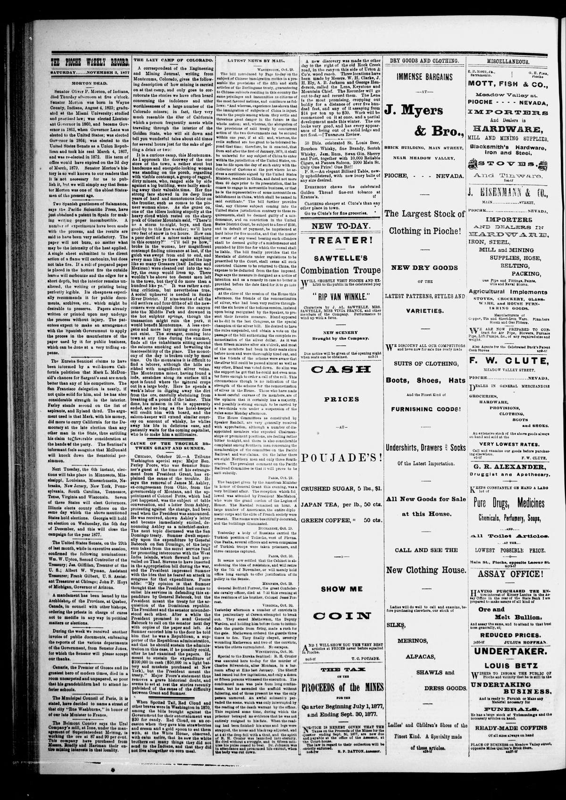

CAUSE OF THE TROUBLE BETWEEN GRANT AND SUMNER.
https://www.loc.gov/resource/sn86091346/1877-11-03/ed-1/?sp=2

See the original pageVer la página original
CHICAGO, October 26.—A Tribune Washington special says: Major Ben. Perley Poore, who was Senator Sumner’s guest at the time of his estrangement from President Grant, has explained the cause of the trouble. He says the removal of James M. Ashley, ex-congressman from Ohio, from the governorship of Montana, and the appointment of Colonel Potts, which had just happened, was the subject of table conversation, and a letter from Ashley, protesting against the change, had been read when the President was announced. He was received, shown Ashley’s letter and became immediately excited, denouncing Ashley as a mischief-maker. The next topic discussed was the San Domingo treaty. Sumner dwelt especially upon the expenditure by General Babcock on San Domingo, of the large sum taken from the secret service fund for promoting intercourse with the West India islands, which Seward had prevailed on Thad. Stevens to have inserted in the appropriation bill during the war, and the President impressed Sumner with the idea that he feared an attack in congress for that expenditure. Poore adds: “My opinion is that Sumner thought that the President had come to enlist his services in defending this expenditure by General Babcock, but the President meant the treaty for the acquisition of the Dominican republic. The President and the senator misunderstood each other. After a while the President promised to send General Babcock to call on the senator next day with copies of the paper and left. As Sumner escorted him to the door he told him that he was a Republican, a supporter of the Republican administration, and that he should sustain the administration in this case, if he possibly could, after he had examined the papers. He meant to sustain the expenditure of $100,000 in cash ($50,000 in a light battery and muskets purchased at New York), but the President meant the treaty.” Major Poore’s statement thus removes a grave historical doubt, and seems to set at rest the stories recently published of the cause of the difficulty between Grant and Sumner.
How to cite this articleCómo citar este artículo
The Pioche Weekly Record. (1877). Pioche, Nev., November 3, 18773 de noviembre de 1877. DR in the American PressRD en la Prensa Norteamericana. Library of Congress, Chronicling America: https://www.loc.gov/resource/sn86091346/1877-11-03/ed-1/?sp=2
ReferencesReferencias
Library of Congress, Chronicling America: The Pioche Weekly Record, November 3, 18773 de noviembre de 1877.
Send an observationEnviar una observación
Does this article connect with your family, your town, or something you know? Did we get something wrong? Write to us. Observations go to the editor's inbox and are read by a person.¿Este artículo conecta con su familia, su pueblo o algo que usted conoce? ¿Nos equivocamos en algo? Escríbanos. Las observaciones llegan al buzón del editor y las lee una persona.
Send observationEnviar observación